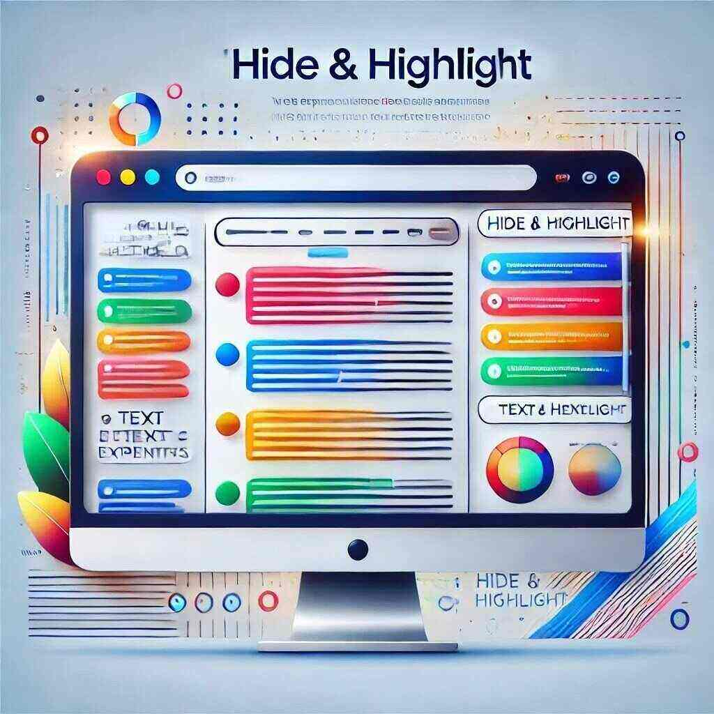

Як CSS Insight змінює роботу з веб-стилями
CSS Insight – інструмент для веб-розробників, який дозволяє переглядати та редагувати стилі елементів прямо на сторінці. Дізнайтеся, як це розширення може зробити ваш робочий процес швидшим і зручнішим.
Читати далі
Light Beyond the Horizon: Створіть атмосферу спокою та гармонії

Дізнайтеся, як нова браузерна тема Light Beyond the Horizon допоможе створити гармонійне середовище для роботи та роздумів. Ми розповімо про її унікальні особливості та те, як вона може покращити ваш досвід користування браузером.
Читати далі
Підкресліть важливе з "Hide & Highlight"

"Hide & Highlight" - це корисне веб-розширення, яке дозволяє вам легко управляти видимістю тексту на веб-сторінках. Цей інструмент ідеально підходить для тих, хто хоче акцентувати увагу на важливій інформації або приховати конфіденційну деталь під час демонстрації вмісту іншим.
За допомогою "Hide & Highlight" ви можете підсвічувати ключові фрази або розмивати небажану інформацію, забезпечуючи ефективність комунікації. Ця функція допомагає створити більш професійний вигляд презентацій та демонстрацій.
Читати далі
Galactic Focus: Тема, яка допоможе вам зосередитися

Дізнайтеся, як нова тема для браузера Galactic Focus може покращити вашу концентрацію під час роботи. Ми розповімо про головні особливості теми, яка допомагає створити спокійну та продуктивну атмосферу для виконання завдань.
Читати далі
Чому важливо контролювати час, проведений в Інтернеті

Контроль часу, проведеного в Інтернеті, може суттєво вплинути на вашу продуктивність і здоров'я. У цій статті ми розглянемо, чому важливо управляти своїм онлайн-часом.
Читати далі
10 кращих жартів від розширення Get Joke Extension

Що може бути кращим, ніж хороший жарт? Ми підібрали для вас 10 найкращих жартів, які ви можете отримати від нашого розширення для браузера.
Читати далі
Як підвищити продуктивність з новим блокувальником сайтів

Дізнайтеся, як новий блокувальник сайтів може допомогти вам зосередитися на важливих завданнях. Ми обговоримо функції, які допомагають уникнути відволікань і підвищити вашу продуктивність.
Читати далі